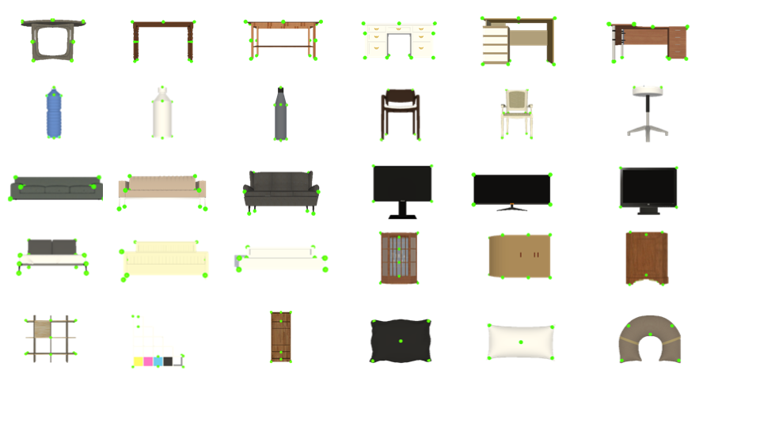
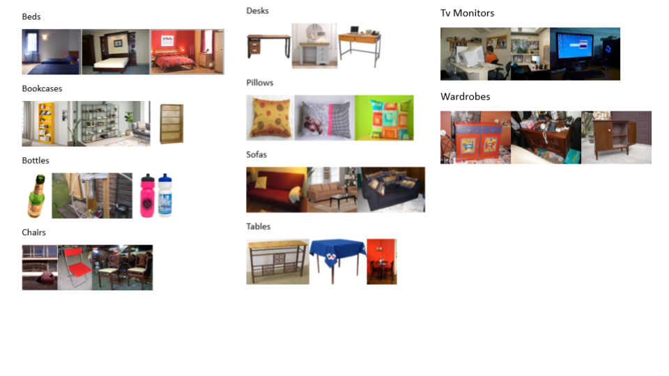

Unity Annotation Tool for Dataset
Overview
Throughout the 2 years of my Mphil studies, I had been working on the research topic: "Reconstructing 3D Indoor Scene from RGB Equirectangular Panorama Images with Convolutional Neural Network (CNN) System". The goal of this research is to accelerate the process of 3D virtual environments creation for VR applications, by implementing a Deep Neural Network based system which uses 2D 360 indoors equirectangular panorama images as input, reconstructs the corresponding 3D environment including room layout and objects, and displays it in the Unity.During the development of the system, I made use of Unity to implement an annotation tool for a custom Object Pose Estimation dataset.
The goal of the annotation tool is to capture 3DOF 2D-3D alignment data between 2D images and 3D CAD models. I first scraped images and CAD models from various sources including Google and ImageNet for images, and Trimble 3D Warehouse for 3D models. The user interfaces offers a variety of parameters for users to tweak in order to generate the best quality of annotations.
Full ThesisKey Features
- Bounding box with adjustable sizes via two corners
- A wide range of selections of images and 3D models: 19543 images and 198 models
- 2D visualization of a 3D model able to transform in 3DOF, achieved by using Render Textures
- Interactable sliders to tweak the transformation speed of the selected 3D model
- Save and Load functions of annotations in json
Screenshots
 